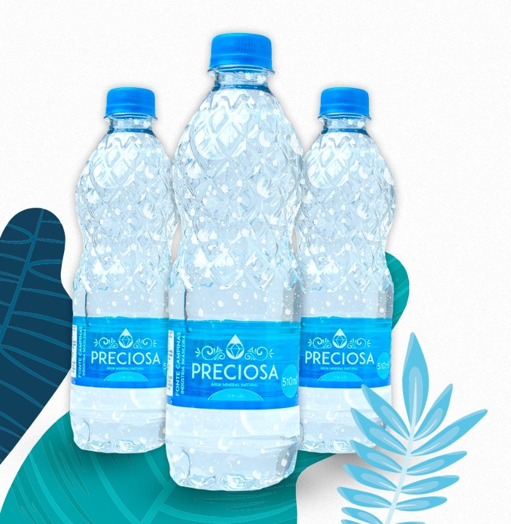
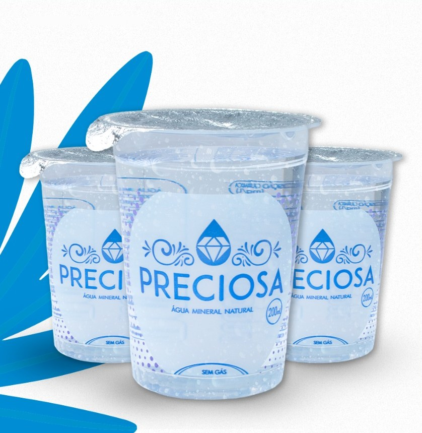
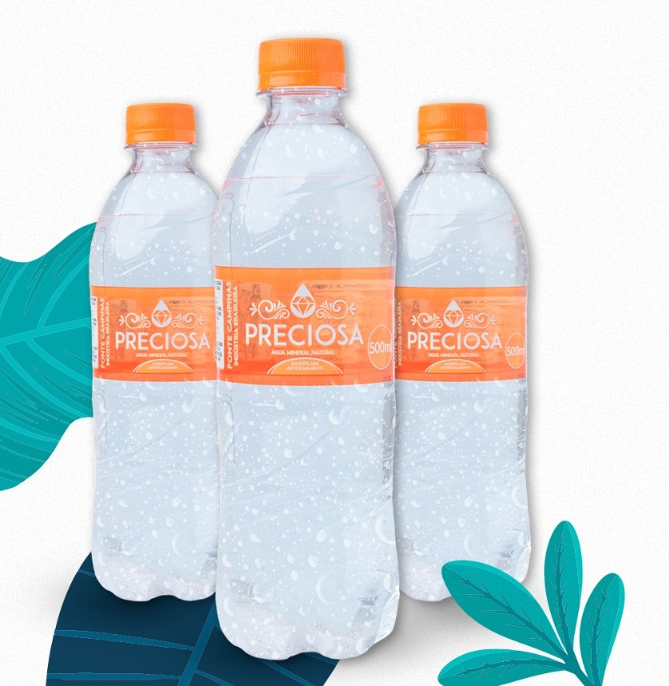
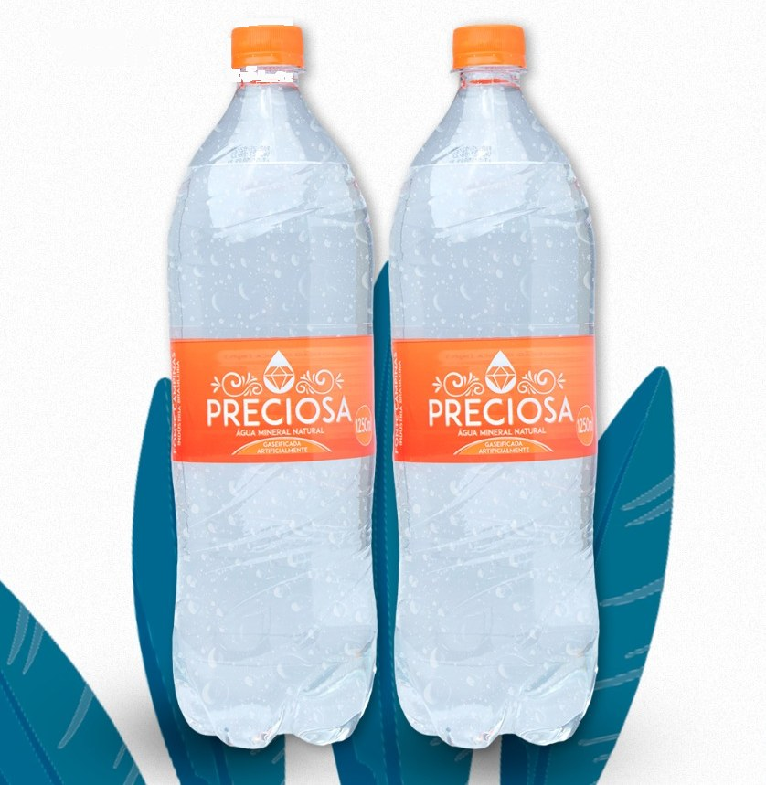
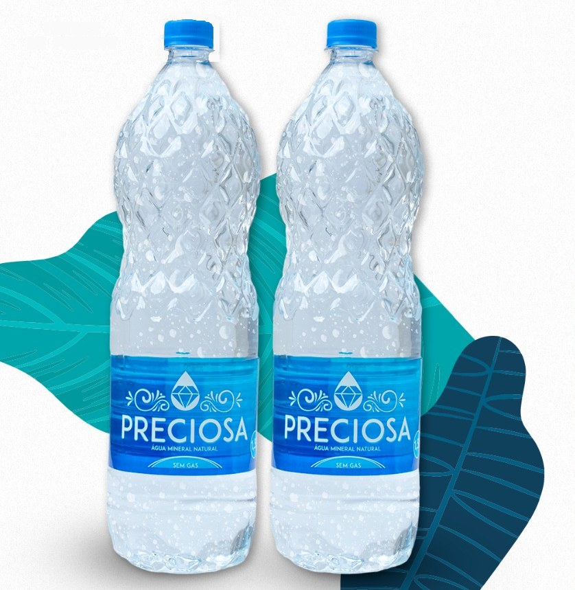
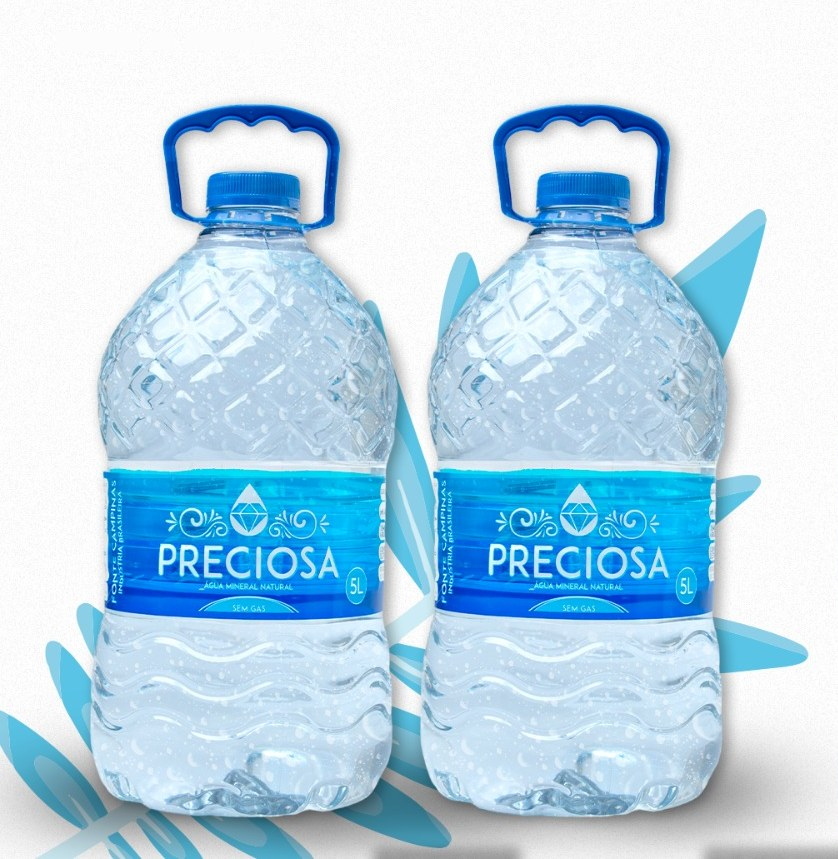

Água mineral da serra de Sumidouro.
Natural ou com gás, captada em quatro fontes próprias, no meio de 49 hectares de mata na Região Serrana do Rio de Janeiro.

- 18anosFundada em 15 de março de 2008
- 4Fontes próprias de água mineral
- 49haDe área, em grande parte mata preservada
- 6Embalagens, do copo ao galão
Seis embalagens, a mesma água.
Tampa azul na natural, tampa laranja na com gás.
Copo 200 ml, natural. Lacrado e na medida para eventos, escritórios, clínicas e viagens.
- Caixa com 48 copos
- EAN 7898931743157
Garrafa 500 ml, com gás. Gaseificada, para acompanhar a refeição ou matar a sede com mais frescor.
- Pacote com 12 garrafas
- EAN 7898931743270
Garrafa 510 ml, natural. Cabe na bolsa, na mochila e no porta-copos do carro.
- Pacote com 12 garrafas
- EAN 7898931743058
Garrafa 1,25 L, com gás. Tamanho de mesa, para dividir no almoço e no jantar.
- Pacote com 6 garrafas
- EAN 7898931743133
Garrafa 1,5 L, natural. Para a geladeira de casa e a mesa do trabalho, o dia inteiro.
- Pacote com 6 garrafas
- EAN 7898931743072
Galão 5 L, natural. Com alça, para a cozinha, o bebedouro e o preparo dos alimentos.
- Fardo com 2 galões
- EAN 7898931743362





Quatro fontes, 49 hectares e uma mata inteira cuidando da água que chega à sua mesa.
Fundada em 15 de março de 2008, a Água Mineral Cascata de Campinas nasceu no Distrito de Campinas, em Sumidouro, na Região Serrana do Estado do Rio de Janeiro, para oferecer à região uma água mineral de qualidade excepcional.
Desde então, investimos em equipamentos de alta produtividade e na modernização do processo fabril. Hoje cada produto tem a sua linha de envase dedicada, com controle de qualidade em todas as etapas.
Nossa reserva hídrica é formada por quatro fontes, em uma área de 49 hectares, na maior parte coberta por vegetação nativa. Assumimos também o reflorestamento, porque proteger a mata é proteger a quantidade e a pureza da água.
Com logística enxuta e uma equipe comercial especializada, atendemos consumidores em todo o estado e nas regiões vizinhas, com o melhor custo-benefício e sem abrir mão da qualidade.
Fale com a Preciosa.
Escolha o assunto e vá direto para a equipe certa.